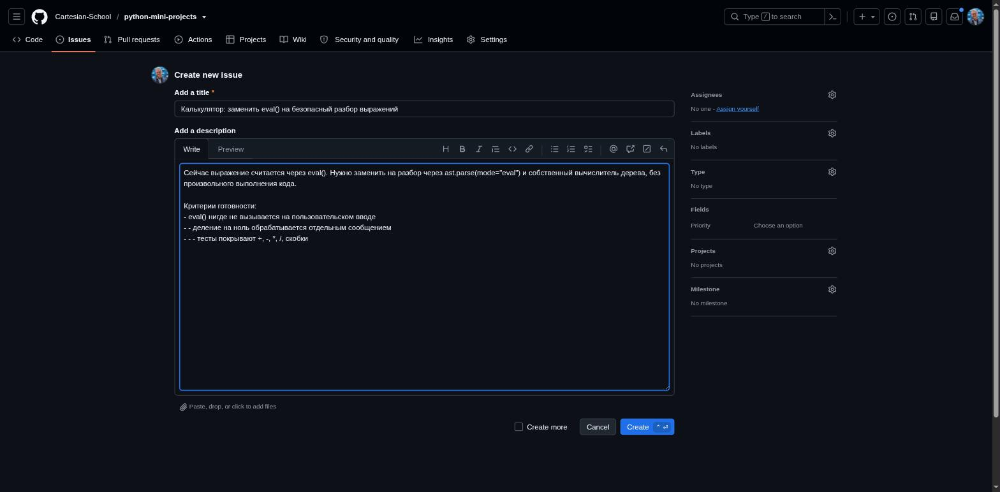
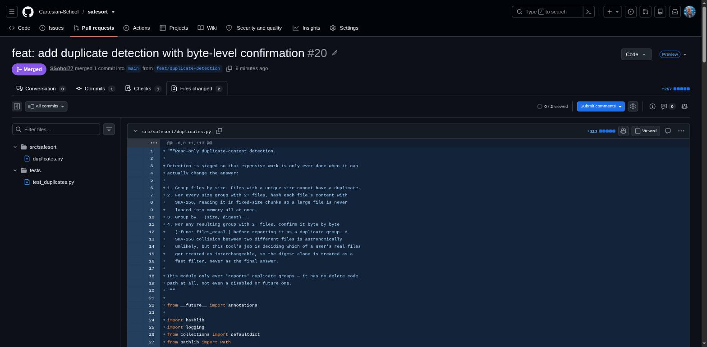

GitHub: применяем Issue, ветку и Pull Request
Разберём Pull Request #20, который прошёл проверку, был слит и закрыл Issue #9.
Часть II уже разобрала цикл Issue → ветка → код → Pull Request → CI → слияние на странице 23-proj-17. Теперь применим эту схему к завершённому изменению SafeSort: Issue #9 «Add duplicate detection». На этот раз разберём и сам Pull Request.
| LOCAL GIT | GITHUB |
|---|---|
| git switch -c feat/duplicate-detection | Issue #9 описывает задачу |
| редактирование + локальный pytest | удалённая ветка появится после push |
| git add + git commit | Pull Request сравнивает ветку с main |
| git push -u origin feat/duplicate-detection | Conversation, Commits, Checks, Files changed |
| после merge: git fetch / pull | review, решение о merge, закрытие Issue |
Граница пересекается на git push: локальные коммиты
становятся удалённой веткой. Issue и Pull Request являются объектами GitHub, а
switch, редактирование, тесты, staging и commit происходят
локально. После merge локальный Git узнаёт новое состояние через fetch/pull.
Issue #9 в Project
Issue #9 заранее добавили в Project «SafeSort: первый релиз». На странице 23-proj-09 мы уже видели, как Issues попадают в Project. Ниже показана форма GitHub с полями заголовка, описания и метаданных.

Ветка feat/duplicate-detection
Работа над Issue #9 шла в изолированной ветке. Тот же приём применялся в каждом чекпойнте Части IV:
git switch -c feat/duplicate-detection
# ...пишем код и тесты, коммитим изменения...
git push -u origin feat/duplicate-detection
Pull Request #20: что сохранил GitHub
Посмотрим на данные репозитория Cartesian-School/safesort:
| Поле PR #20 | Реальное значение |
|---|---|
| Заголовок | feat: add duplicate detection with byte-level confirmation |
| Ветка → main | feat/duplicate-detection → main |
| Commits | 1 коммит; весь Issue #9 уместился в одно логическое изменение |
| Files changed | 2 файла: src/safesort/duplicates.py (+113), tests/test_duplicates.py (+144) |
| Conversation | «Closes #9» в описании и чек-лист плана тестирования (pytest tests/: 59 passed) |
| Checks | test: pass, 11s (workflow safesort-tests.yml) |
| Review | у учебного PR не было отдельного reviewer; это факт истории, а не модель для командной работы |
| Решение о слиянии | Merged обычным merge commit 01989e0c, не squash и не rebase |
Четыре вкладки и два разных вида проверки
| Вкладка | На какой вопрос отвечает |
|---|---|
| Conversation | что обсуждали, какое Issue закрывается, каков итог review |
| Commits | из каких сохранённых шагов состоит ветка |
| Checks | прошли ли автоматические workflow и тесты |
| Files changed | что именно предлагается добавить, изменить или удалить |
Reviewer читает изменения и может оставить comment, выбрать Approve или Request changes. CI отвечает «прошли ли автоматические проверки?», а человек отвечает «следует ли принять это изменение?». Ни зелёный Checks не заменяет инженерное review, ни review не заменяет воспроизводимые тесты.

Closes #9 при слиянии. В истории SafeSort Встречаются и другие варианты: один PR может закрыть два связанных Issue (страницы 23-11 и 23-14 показывают такой пример), и Issues, закрытые вручную без отдельного PR вовсе (страницы 23-20 и 23-22).Коротко
- На PR #20 виден тот же цикл Issue, ветки и Pull Request, который был разобран в Части II.
- Files changed, Commits, Checks и Conversation показывают 2 файла, 1 коммит, зелёную проверку и «Closes #9».
- Один PR может закрыть несколько Issues; Issue также можно закрыть вручную без PR.